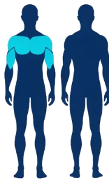
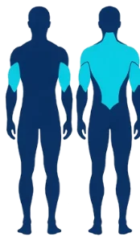
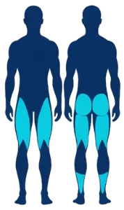
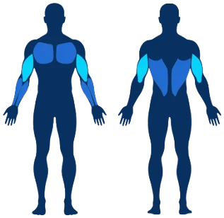
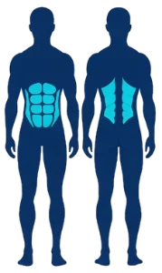

Ta séance du jour, choisie d'après ton calendrier et ta récupération.
Tout ce qui pousse, 100 % sur machines. Le volume du buste et l'avant des bras.

Tout ce qui tire, sur machines. La largeur en V, l'épaisseur du dos et les biceps.

La moitié de ta masse musculaire. Les travailler booste toute ta progression.

Un peu de pecs et de dos, puis 4 machines dédiées biceps-triceps pour le volume.

Grands droits, obliques et lombaires : la sangle qui tient tout le reste.

Ce qui est prévu, ce qui est fait, et ce que le coach en pense.
Touche un jour pour marquer ta séance ou en caler une. Le coach vérifie l'espacement avant de valider. Les jours en pointillés sont prévus, pas encore faits.
Le poids, la force et le bilan de tes semaines. Ce qui compte, c'est la tendance.
Le coach relit tes 4 dernières semaines. Le niveau monte dès que les deux conditions sont réunies, et il ne redescend qu'après 14 jours de sursis — ton meilleur palier, lui, reste acquis.
Chaque dimanche à 20h, ta semaine est figée : séances, tonnage, séries par muscle, records et évolution du poids.
Tes préférences, ta sauvegarde et la méthode derrière les conseils.